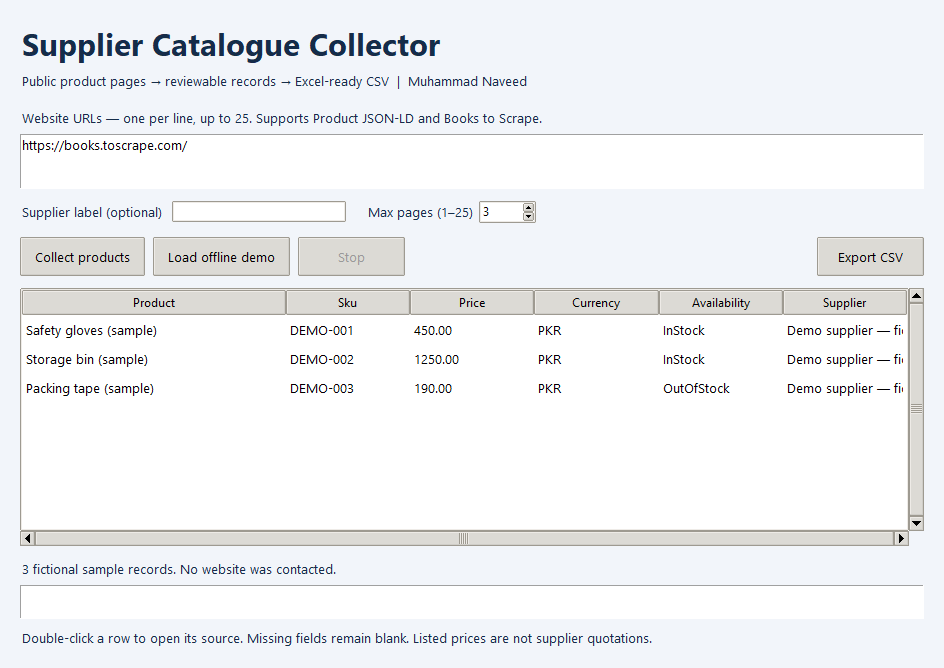

Identify the product
Product name, SKU and supplier label. Missing fields remain blank, so you can distinguish published information from gaps.
Collect public product details, keep the source links, and export a clean CSV for your sourcing research.
Version 1.0.0 · Windows x64 · Around 15 MB · No Python installation needed

Product name, SKU and supplier label. Missing fields remain blank, so you can distinguish published information from gaps.
Exact listed price, currency and availability where provided. Original currencies are preserved.
Product URL, source page and collection timestamp travel with every exported record. Double-click a row to check its source.
Open SupplierCatalogueCollector.exe from the extracted folder. Keep the included _internal folder beside it.
Click “Load offline demo” for three fictional sample products, or collect the prefilled Books to Scrape practice catalogue.
Review the results, then click “Export CSV”. Open the file in Excel or your preferred spreadsheet application.
Collect catalogue information here, then confirm quotations for the same item and currency before comparing them in the Procurement Quotation Analyzer.
This free executable is unsigned, so Windows may show an unfamiliar-publisher warning. Check the source and SHA-256 checksum before deciding whether to run it.